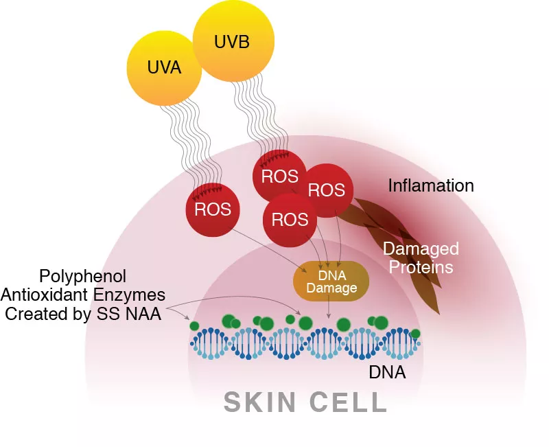
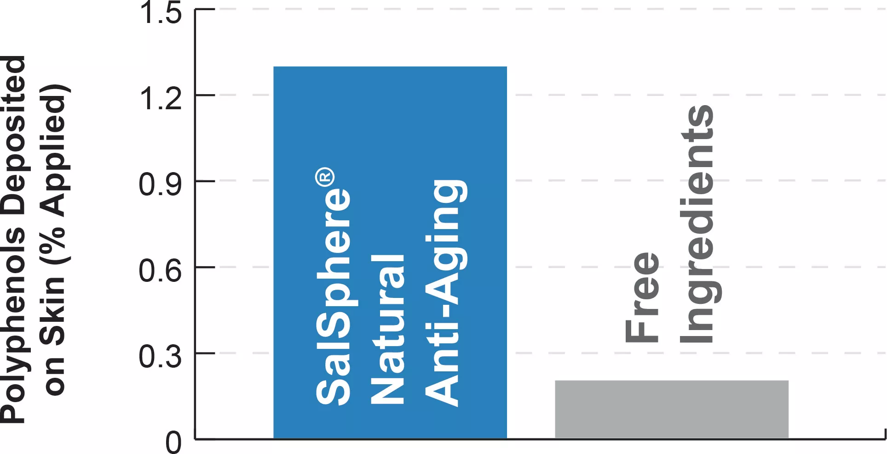
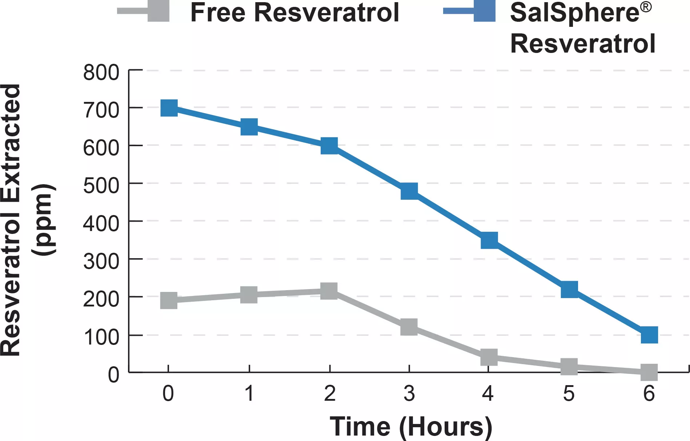

Delivery system of natural polyphenol complex with high antioxidant, anti-aging, and anti-inflammatory activity. Polyphenols work on multiple biochemical pathways, such as DNA protection, protein synthesis, membrane integrity, etc. to reduce overall signs of aging, inflammation, wrinkle treatment, brightening, moisturizing, and overall skin rejuvenation.
| Version |
INCI & Characteristics |
| 04 | Resveratrol, Apple extract (Procyandin), Butyrospernum Parkii (Shea) Butter, Euphorbia Cerifera (Candelilla) Wax, Water, Hydroxyethyl Behenamidopropyl Dimonium Chloride, Behenyl Alcohol, Phenoxyethanol, Ethylhexylglycerin |
| 12 | China Compliant, Natural, PPG/PEG Free Apple (Pyrus Malus) Extract, Fruit Extract, Grape Seed Extract (Resveratrol), Butyrospermum Parkii (Shea) Butter, Euphorbia Cerifera (Candelilla) Wax, Polyglyceryl-2 Stearate, Glyceryl Stearate, Stearyl Alcohol |
Resveratrol is a potent polyphenol and powerful antioxidant derived from various botanicals, including the skin of red grapes. Resveratrol has been shown to reduce signs of aging and brighten and even out skin tone. Resveratrol also impedes aging by inhibiting the production of COX-2, an enzyme responsible for signs of inflammation.
Procyanidin B2 is a powerful polyphenol and antioxidant extracted from apples, which promotes cell growth and rejuvenation. It inhibits the formation of advanced glyaction end-products (AGE) that cause wrinkles and dull skin tones.
Both extracts are not stable in water-based formulations and must be encapsulated to allow commercial shelf life and efficacy. Encapsulation keeps the actives stable in products, including lotion.
SalSphere® Resveratrol maintains a higher level on skin vs. free resveratrol over six hours. Resveratrol content was analyzed via HPLC after ethanol extractions from the skin.

SalSphere® technology has over five times greater deposition of polyphenols in a facial wash when compared to the free ingredients. The technology makes it more effective.

Amount of antioxidants deposited on skin from SalSphere® versus free. Polyphenols were detected using ethanol skin extractions followed by HPLC analysis from the forearms of volunteers.
The technology demonstrates a greater residence time on skin, enabling it to be more effective for a longer period of time.

SalSphere® Resveratrol maintains a higher level on skin vs. free resveratrol over six hours. Resveratrol content was analyzed via HPLC after ethanol extractions from the skin.
| Appearance @ 20°C |
Opaque liquid |
| Applications | Creams, lotions, concealers, cleansers, and more |
| Color | Off-white |
| Odor |
Characteristic |
| pH (1% Solution) |
5.0 ± 1.0 |
| Shelf Life (months) |
18 |
| Usage Level (wt%) 5-10 |
Closed container at 12-32° |
| Storage (°C) | Closed container at 12-32° |
with SalSphere® Natural Anti-Aging and SalColorFx™ White to Green
| Ingredients | (W/W %) |
| SS Natural Anti Aging | 3.00 |
| SCoFXW2G | 6.00 |
| Zea Mays (Corn) Starch | 2.00 |
| Propanediol | 2.00 |
| Xanthan Gum | 0.50 |
| Isostearyl Isostearate 8.50 | 8.50 |
| Glyceryl Stearate | 3.50 |
| C14-22 Alcohols (and) C12-20 Alkyl Glucoside | 2.00 |
| Cetearyl Alcohol | 1.25 |
| Helianthus annuus (Sunflower) Seed Oil | 1.00 |
| Coconut Oil | 1.00 |
| Butyrospermum Parkii (Shea) Butter | 0.50 |
| Squalane | 4.00 |
| C13-15 Alkane | 4.00 |
| Phenethyl Alcohol (and) Pentylene Glycol (and) Propanediol | 2.00 |
| Lactic Acid | 0.10 |
| Water, L-Arginine | 0.10 |
| Water/Aqua | 58.55 |